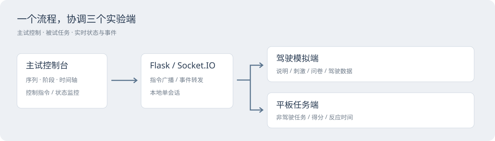
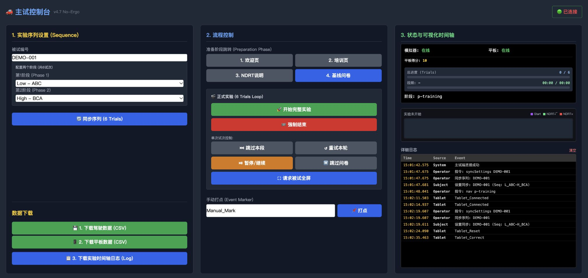
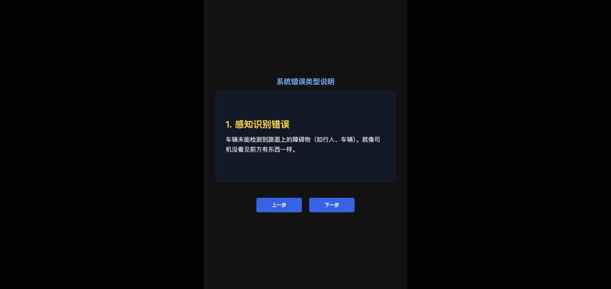
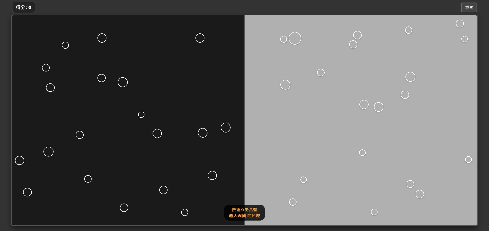

03 · 智能座舱实验控制台
研究工具｜主试、驾驶模拟、平板任务三端｜本地运行
问题：实验流程依赖多个设备的协同
主试需要配置试次、下发指令、切换阶段、观察被试端状态并导出数据。驾驶模拟端和非驾驶任务平板各自承担不同任务，分散操作容易让进度难以对应。
我的工作
梳理实验序列、角色与设备之间的关系，设计主试控制台、被试驾驶模拟端和平板任务端；完成 Flask + Socket.IO 实现、页面交互与实验环境部署。工具用于座舱研究实践。
三端分工

- 主试端：被试编号、两阶段六试次配置、准备阶段跳转、开始/暂停/跳过、手动打点、进度与时间轴、导出入口。
- 驾驶模拟端：说明与培训、基线问卷、刺激播放、试次评价及数据导出。
- 平板任务端：非驾驶任务、正确/错误反馈、得分及反应时间事件。



一个演示任务
使用虚构编号 DEMO-001，在主试端同步 Low/High 阶段序列。主试发出培训页指令，驾驶模拟端切换；平板完成一次选择后，事件回传主试时间轴，并可下载平板 CSV。
公开包不含原研究视频和真实被试数据。研究刺激部分需要用户自行提供有使用权的素材；作品截图展示的是三端界面与合成操作，未声称完成全套研究实验。
设计取舍
主试端优先信息密度和全局可控性；被试端优先当前阶段的任务理解；平板端减少操作并记录反应事件。将同步、任务和记录串起来，比单独美化三个页面更重要。
当前限制
这是单会话本地研究工具：数据保存在浏览器或服务内存，不能当作多实验并行平台；断线重连、状态恢复、权限和持久化需要继续完善。公开版本默认本机访问并关闭调试，不用于开放网络。问卷和刺激需按实际研究设计核对。
面试可讲的能力
多角色信息架构、研究流程落地、实时交互原型，以及把实验人员的操作需求转成可用工具的能力。